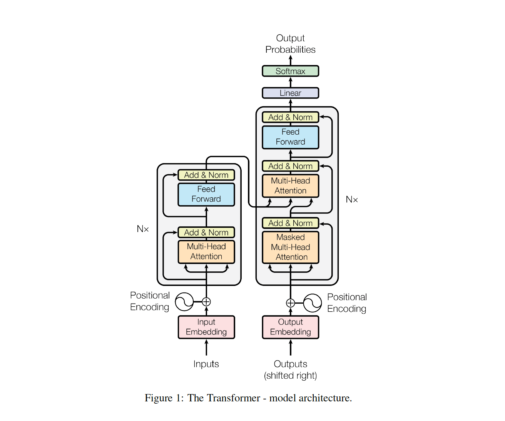
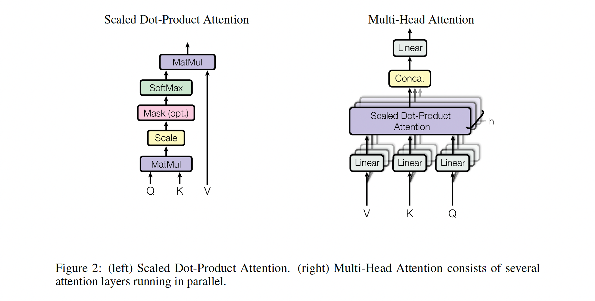
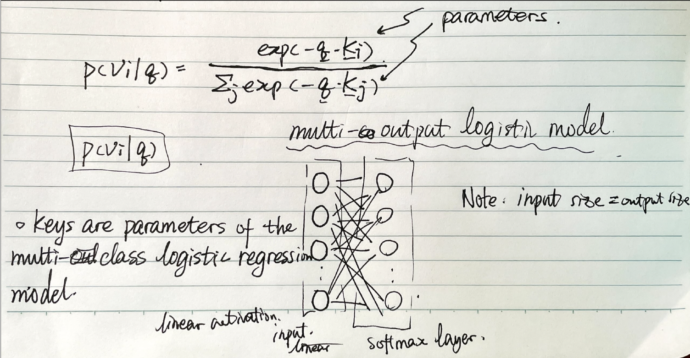
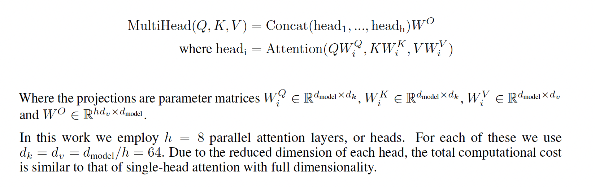
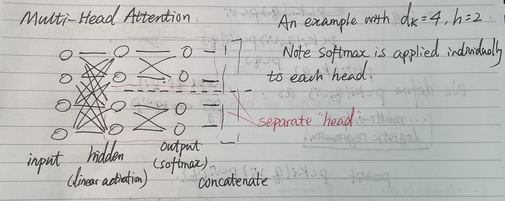
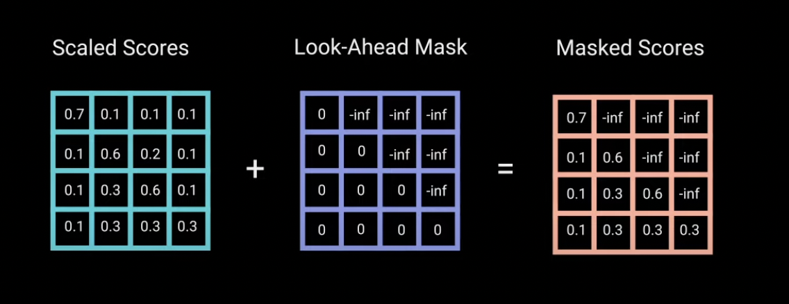
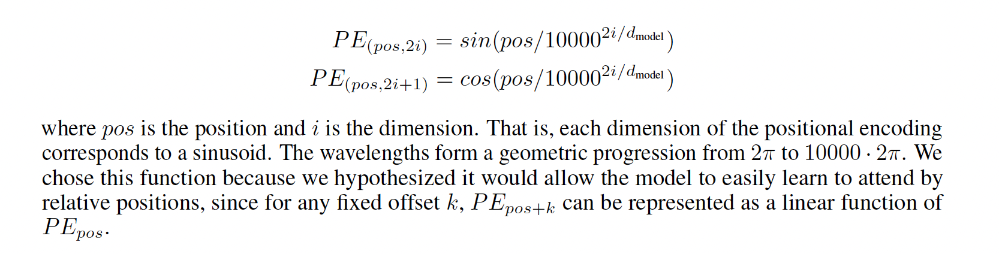

Attention is all you need
Model Architecture
Most competitive neural sequence transduction models have an encoder-decoder structure. Here, the encoder maps an input sequence of symbol representations $(x_1; …; x_n$) to a sequence of continuous representations $z = (z_1; …; z_n)$. Given $z$, the decoder then generates an output sequence $(y_1; …; y_m)$ of symbols one element at a time.
The Transformer follows this overall architecture using stacked self-attention and point-wise, fully connected layers for both the encoder and decoder, shown in the left and right halves of Figure 1, respectively.

Attention
An attention can be described as mapping a query and a set of key-value pairs to an output, where the query, keys, values and outputs are all vectors. The output is computed as a weighted sum of the values, where the weight assigned to each value is computed by a compatibility function of the query with the corresponding key.

Scaled Dot-Product Attention
The input consists of queries and keys of dimension $d_k$, and values of dimension $d_v$. We compute the dot products of the
query with all keys, divide each by $\sqrt{d_k}$, and apply a softmax function to obtain the weights on the values.
In practice, we compute the attention function on a set of queries simultaneously, packed together into a matrix $Q$. The keys and values are also packed together into matrices $K$ and $V$ . We compute the matrix of outputs as: $\text{Attention}(Q,K,V) = \text{softmax}(\frac{QK^T}{\sqrt{d_k}})V$

Note that the matrices are row-based, that is, the row vectors are concatenated to form a matrix.
We normalize the weights before passing it through a softmax because as the dimension of queries and keys $d_v$ grows, their dot product tends to get large in magnitude, pushing the softmax into saturation (i.e., small gradient).
Intepretation as Logistic Regression
The corresponding output $v$ to specific output $q$ is given by $\sum_j \lambda_jv_j$, where $\sum_j \lambda_j = 0$. We can let $\lambda_j = p(v_j|q)$, and the attention mechanism is essential a multi-class logistic regression problem, where the input is the query $q$ and the output is the probability distribution of likelihood of the values. This can be observed by inspecting: $p(v_j|q) = \frac{-\exp(-q\cdot k_j)}{\sum_k\exp(-q\cdot k_k)}$ takes the form of logistic regression.
Hence the keys $k_j$ can be viewed as the parameters to be learnt from the logistic model. It is equivalent to a no-hidden layer neural network, where the input layer has linear activation and the output layer is a softmax layer.
Multi-Head Attention
Instead of performing a single attention function with dmodel-dimensional keys, values and queries, we found it beneficial to linearly project the queries, keys and values $h$ times with different, learned linear projections to $d_k, d_k$ and $d_v$ dimensions, respectively.
Multi-head attention allows the model to jointly attend to information from different representation subspaces at different positions, which is not achievable with single attention head. The outputs from each head are concatanated to form the final output.
Mathematically:

This essentially insert a hidden layer with linear activation. The weights of each head are separately learnt.

Masking
The docoder should be prevented from seeing downstream (future) words that have not been generated during training. To do this, we can adopt masking, which can be done by adding a look-ahead mask as follows:

The masked scores is then fed into a softmax layer, zeroing out all the $-\infty$ values.
Position-wise Feed-Forward Networks
In addition to attention sub-layers, each of the layers in our encoder and decoder contains a fully connected feed-forward network, which is applied to each position separately and identically. This consists of two linear transformations with a ReLU activation in between (i.e., one hidden layer).
Embedding and Softmax
Using the output embedding to improve language models
Positional Encoding （*）
Since the model contains no recurrence and no convolution, in order for the model to make use of the order of the sequence, we must inject some information about the relative or absolute position of the tokens in the sequence. To this end, we add “positional encodings” to the input embeddings at the bottoms of the encoder and decoder stacks. The positional encodings have the same dimension $d_{model}$ as the embeddings, so that the two can be summed. In this work, we use sine and cosine functions of different frequencies:

Why Self-Attention
Training
Regularization
We employ three types of regularization during training:
Residual Dropout: We apply dropout to the output of each sub-layer, before it is added to the sub-layer input and normalized. In addition, we apply dropout to the sums of the embeddings and the positional encodings in both the encoder and decoder stacks. For the base model, we use a rate of $P_{drop} = 0.1$.
Label Smoothing: During training, we employed label smoothing of value $ls = 0.1$. This hurts perplexity, as the model learns to be more unsure, but improves accuracy and BLEU score.
Results
The Animated Transformer
See this video for animation. The first 30 seconds of the video illustrates how a transformer works and what it means to attend to different words. Fast forward to [10:00] to see how the decoder does. [11:00] explains how masking works.
Jinghong Chen @2021-2022